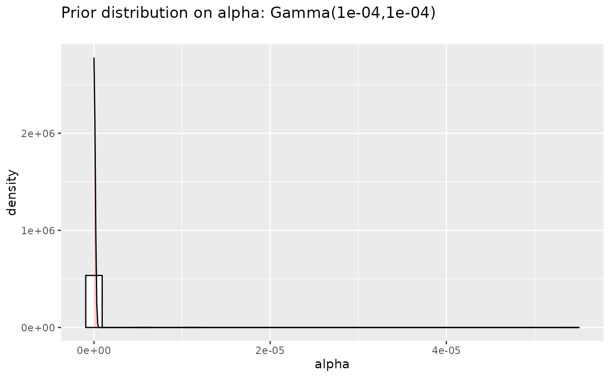
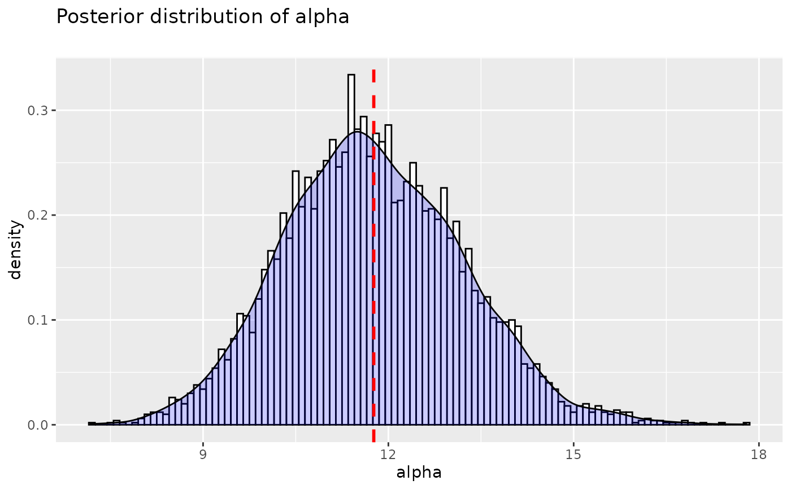

Sampler for the concentration parameter of a Dirichlet process
Source:R/sample_alpha.R
sample_alpha.RdSampler updating the concentration parameter of a Dirichlet process given
the number of observations and a Gamma(a, b) prior, following the augmentation
strategy of West, and of Escobar and West.
Arguments
- alpha_old
the current value of alpha
- n
the number of data points
- K
current number of cluster
- a
shape hyperparameter of the Gamma prior on the concentration parameter of the Dirichlet Process. Default is
0.0001.- b
scale hyperparameter of the Gamma prior on the concentration parameter of the Dirichlet Process. Default is
0.0001. If0then the concentration is fixed and this function returnsa.
References
M West, Hyperparameter estimation in Dirichlet process mixture models, Technical Report, Duke University, 1992.
MD Escobar, M West, Bayesian Density Estimation and Inference Using Mixtures Journal of the American Statistical Association, 90(430):577-588, 1995.
Examples
#Test with a fixed K
####################
alpha_init <- 1000
N <- 10000
#n=500
n=10000
K <- 80
a <- 0.0001
b <- a
alphas <- numeric(N)
alphas[1] <- alpha_init
for (i in 2:N){
alphas[i] <- sample_alpha(alpha_old = alphas[i-1], n=n, K=K, a=a, b=b)
}
postalphas <- alphas[floor(N/2):N]
alphaMMSE <- mean(postalphas)
alphaMAP <- density(postalphas)$x[which.max(density(postalphas)$y)]
expK <- sum(alphaMMSE/(alphaMMSE+0:(n-1)))
round(expK)
#> [1] 80
prioralpha <- data.frame("alpha"=rgamma(n=5000, a,1/b),
"distribution" =factor(rep("prior",5000),
levels=c("prior", "posterior")))
library(ggplot2)
p <- (ggplot(prioralpha, aes(x=alpha))
+ geom_histogram(aes(y=..density..),
colour="black", fill="white")
+ geom_density(alpha=.2, fill="red")
+ ggtitle(paste("Prior distribution on alpha: Gamma(", a,
",", b, ")\n", sep=""))
)
p
#> `stat_bin()` using `bins = 30`. Pick better value `binwidth`.

postalpha.df <- data.frame("alpha"=postalphas,
"distribution" = factor(rep("posterior",length(postalphas)),
levels=c("prior", "posterior")))
p <- (ggplot(postalpha.df, aes(x=alpha))
+ geom_histogram(aes(y=..density..), binwidth=.1,
colour="black", fill="white")
+ geom_density(alpha=.2, fill="blue")
+ ggtitle("Posterior distribution of alpha\n")
# Ignore NA values for mean
# Overlay with transparent density plot
+ geom_vline(aes(xintercept=mean(alpha, na.rm=TRUE)),
color="red", linetype="dashed", size=1)
)
#> Warning: Using `size` aesthetic for lines was deprecated in ggplot2 3.4.0.
#> ℹ Please use `linewidth` instead.
p
